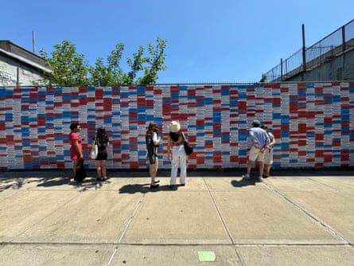
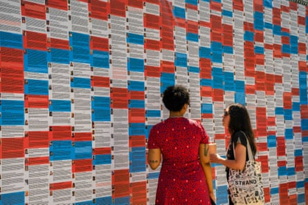

Audrey Southard-Rumsey pushed a flagpole into a police officer’s chest. Ralph Celentano shoved an officer over a ledge. Pauline Bauer accused Democrats of stealing an election and trafficking children and demanded: “Bring Nancy Pelosi out here now. We want to hang that fucking bitch.”
These are just three of the stories told on the Wall of Shame , a public installation by artist Phil Buehler that launched on 4 July in Bushwick, Brooklyn, New York. The giant red, white and blue mural aims to document and highlight the stories and alleged crimes of more than 1,575 people involved in the January 6 2021 attack on the US Capitol who were pardoned by Donald Trump.
The project is the third in what might be called Buehler’s art against autocracy trilogy, a series of collaborations with the non-profit Radio Free Brooklyn . It began in 2020 with the Wall of Lies, a 50ft mural displaying more than 20,000 lies told by Trump during his first term in office. The second installation, the Wall of Liars and Deniers , was a mural displaying the 381 Republican politicians running in the 2022 midterm elections who denied Democrat Joe Biden’s legitimacy as president.
“Artists can have more power than Fox News to turn this around,” Buehler says in a Zoom interview from his Brooklyn studio, reflecting on the struggle for truth in the Trump era. “Boy, would Magaland hate it if culture, music and art [pushed back]. You’ve got to double down the other way and start flooding this zone with art as Trump tries to erase it.”
The Wall of Shame is a 50ft-long, 10ft-tall outdoor mural featuring the pardoned Trump supporters, colour-coded to distinguish their actions: violent rioters appear in red, those who damaged property are shown in blue, and the remaining individuals are depicted in white. The combined effect resembles a Star and Stripes that has imploded.
Buehler spent about 100 hours gathering the rioters’ stories, charges and sentences from research by National Public Radio (NPR) and formatting them to be printed on waterproof vinyl and hung outdoors on a fence. NPR had about a thousand photos of the rioters, so Buehler enlisted a friend to track down a further 500 pictures; only about 10 are now missing.
Photograph: Phil Buehler
He adds: “Artists can do it in a different way. I’m just presenting facts. It’s almost seducing people with a visual that they then approach and go, that’s pretty cool, what is that? Then you can read these things and we’re benefiting from NPR’s reputation having factchecked this. ”
The rioters are easy to dismiss as an amorphous mob; the mural is a reminder that each is a person with their own career, family and personal demons. Guy Reffitt, 48, from Wylie, Texas, allegedly told his family that he had taken his gun to the US Capitol on January 6 and said to his child: “If you turn me in, you’re a traitor. And you know what happens to traitors. Traitors get shot.” But Pamela Hemphill , 68, from Boise, Idaho, refused Trump’s pardon and expressed remorse, describing the police as “heroes” and the rioters as “very dangerous people”.
Buehler reflects: “I could see patterns. It’s very tribal. Trump was successful in almost stealing red, white and blue as their symbol. They all call themselves patriots on this wall. They all bought into the big lie that the election was stolen.
“Their social media posts and messages that were part of the record when they were indicted show that they believed a lot of the other lies like Pizzagate – we’ve got to stop the pedophiles taking over. They’re in a media bubble. They believe it and they’re in it together and they did see themselves as patriots.”
The project aims to foster solidarity and courage among those who oppose authoritarianism. Buehler recounts how the defacement of the Wall of Lies by the far-right group Proud Boys galvanised the community, leading them to cut out the Proud Boys graffiti and spraypainted hearts all over it and raise money for a bigger mural.
“ How are we going to survive the next four years? This runs through your head. Then what can I do? Community gives you courage. Marching in those parades gives you courage to fight against this. We’re using this symbolic art piece to rally around a different flag.”
The Wall of Shame – installed at the same location as the Wall of Lies – was provoked by Trump’s decision on his first day back in office to grant clemency to about 1,500 individuals charged or convicted in connection with the January 6 insurrection, including people found guilty of assaulting police officers. Democrats called the move an affront to justice and democracy.
Yet the controversy has been almost forgotten in the fast-paced news cycle, overwhelmed by a deluge of Trump drama from Elon Musk to Signalgate to tariffs to protests in Los Angeles to military strikes on Iran . But Buehler insists: “We look at that as the first of his steps in his march toward authoritarianism. ‘OK, let’s pardon all the people that rioted.’
Photograph: Emma Delahanty
“It’s interesting what we’ve seen since. He sent thousands of national guard and marines to LA for mostly peaceful protests. I don’t know if it’s ironic or telling that, during the January 6 riots, he watched them on television on the other side of DC and didn’t do anything and then pardoned them. A hundred and forty cops got hurt and now this year [FBI director] Kash Patel is saying, ‘Touch a cop, go to jail.’ I guess the unsaid part is, ‘Touch a cop, go to jail unless it’s for Trump and what Trump wants.’”
The artist adds: “He’s since followed it up with some illegal deportations. He disobeys the courts constantly. He’s turned the White House into a car dealership showroom with Tesla. And now he’s starting a war [against Iran] without the authorisation of Congress. I guess we’re trying to highlight that was the first thing. Don’t forget that one: the pardon of the rioters. That was his first act of trying to emulate Putin and become an authoritarian leader .”
Trump has been waging war on reality for a decade, conjuring a mirror world in which up is down and black is white. He has described the January 6 rioters as patriots and martyrs while dismissing those who protested against immigration enforcement raids in LA as “ insurrectionists ”. When he faced criminal investigations he blamed the “weaponisation” of the justice department, while any negative media coverage is routinely branded “fake news”.
Rob Prichard of Radio Free Brooklyn, who initially suggested that Buehler tackle the January 6 pardons, finds something Orwellian in Trump’s attempts to rewrite history and dominate the cultural space. The president has seized control of the John F Kennedy Center for the Performing Arts and ordered the removal of so-called “improper, divisive or anti-American ideology” from Smithsonian Institution museums , forcing the resignation of the director of its National Portrait Gallery .
Speaking from Park Slope, Brooklyn, Prichard, 69, says via Zoom: “As a nation we are as close to autocracy as we’ve ever been. It seems like fascism is basically a war on consensus reality and we need to put a pin in those points where it’s so obvious that it’s not true.
“Trump’s entire political career is predicated on a demonstrable lie, saying Barack Obama was born in Kenya, and because we never called him out on it properly in the first place, it just continues. If you can get away with it you play the hand again. Steve Bannon [a rightwing podcast and former Trump adviser] is flooding the zone. We need to flood the zone too but with the truth.”
The colour-coding of the mural is intentional, designed to reclaim a national symbol from what the creators perceive as its co-option by Trump supporters. Prichard adds: “We’re not ceding the red, white and blue. We claim it and we claim the true meaning of representative democracy.
“I have hope because for one thing, autocracy and fascism is predicated on violence and the threat of violence. Both violence and the threat of violence are untenable. They can’t be. You just can’t maintain them forever and it has to break. The fever has to break eventually and either there’s complete submission or we liberate ourselves. I don’t see complete submission. That’s part of our DNA.”
Prichard does not use words such as fascist lightly. His 91-year-old mother is German and was forced to join Hitler’s youth movement when she was seven years old. “She remembers it. She is deathly afraid of Trump. If she were 10 years younger, she would probably move to Germany permanently.”